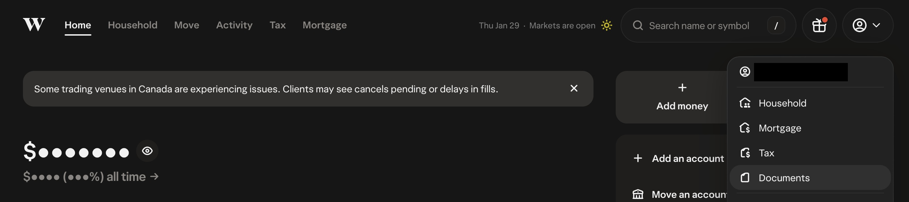
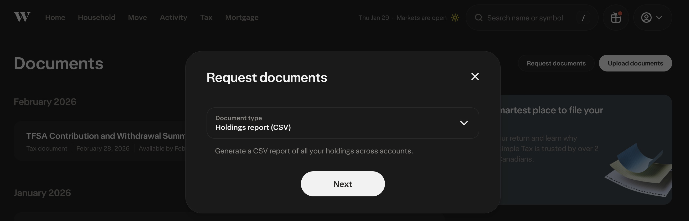
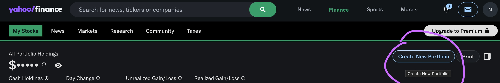

Seamlessly transfer your investment portfolio from WealthSimple to Yahoo Finance
This free online converter helps you seamlessly transfer your investment portfolio data from WealthSimple to Yahoo Finance. If you're looking to track your holdings across multiple platforms or consolidate your investment management tools, this converter makes the process simple and straightforward. No installation required—just upload your WealthSimple CSV export and get a compatible Yahoo Finance format in seconds.
Log into your WealthSimple account and navigate to the document download section to export your Holdings Report as a CSV file.

You have two options to input your WealthSimple CSV:

The tool automatically converts your WealthSimple CSV to Yahoo Finance format. Check the output preview to ensure all your holdings appear correctly, then click "Download Result" to save your converted file.
Log into your Yahoo Finance account and use the import function to add your holdings:

To help you understand the conversion format, we've provided example files showing before and after data:
This is what your exported WealthSimple CSV looks like:
This is the converted format that Yahoo Finance will accept:
No, your data is completely safe. This is a client-side converter that runs entirely in your web browser. Your WealthSimple CSV data is processed locally on your computer and is never sent to any server. There are no accounts to create, no data collection, and no tracking. Once you close your browser, nothing is stored.
Unfortunately, WealthSimple and Yahoo Finance use different CSV formats. WealthSimple includes more detailed information (account types, market prices, unrealized returns, etc.) that Yahoo Finance doesn't need or can't parse. This converter extracts the essential data—symbol, quantity, price, and trade date—and reformats it into Yahoo Finance's expected structure.
Canadian stocks listed on the TSX are automatically converted to include the .TO suffix, which is how Yahoo Finance recognizes Canadian stocks. For example, "STO" becomes "STO.TO". US stocks maintain their regular ticker symbols (like "GME" for GameStop).
Recommended approach: Process one account at a time. Export your Holdings Report for each account separately and convert them individually. This ensures accuracy and makes it easier to organize your holdings in Yahoo Finance. Mix the converted CSV files if you want to import everything at once.
The converter is optimized for standard WealthSimple Holdings Report exports. If you encounter an error:
No. This tool is completely separate from WealthSimple. It simply reads the CSV file you provide and converts the format. It doesn't connect to or modify your WealthSimple account in any way.
No, this tool is completely free to use. There are no hidden fees, subscriptions, or premium versions.
The converter is maintained to work with current WealthSimple and Yahoo Finance formats. As these platforms update their CSV structure, the converter is updated accordingly. Check the GitHub repository for the latest version.
This converter transforms WealthSimple's detailed Holdings Report format into Yahoo Finance's simpler portfolio format. Here's what happens:
Visit the GitHub repository to see the source code or contribute improvements.
No Financial Advice: This tool is provided as-is for informational purposes only. It is not financial advice, and we do not provide investment recommendations. Always verify your data after conversion before relying on it for financial decisions.
Data Accuracy: While we strive to ensure accurate conversions, users are responsible for verifying that all holdings are correctly transferred. Some edge cases may require manual adjustment.
No Warranty: This tool is provided without any warranty. Use it at your own risk. The creators are not responsible for any errors, data loss, or financial consequences resulting from its use.